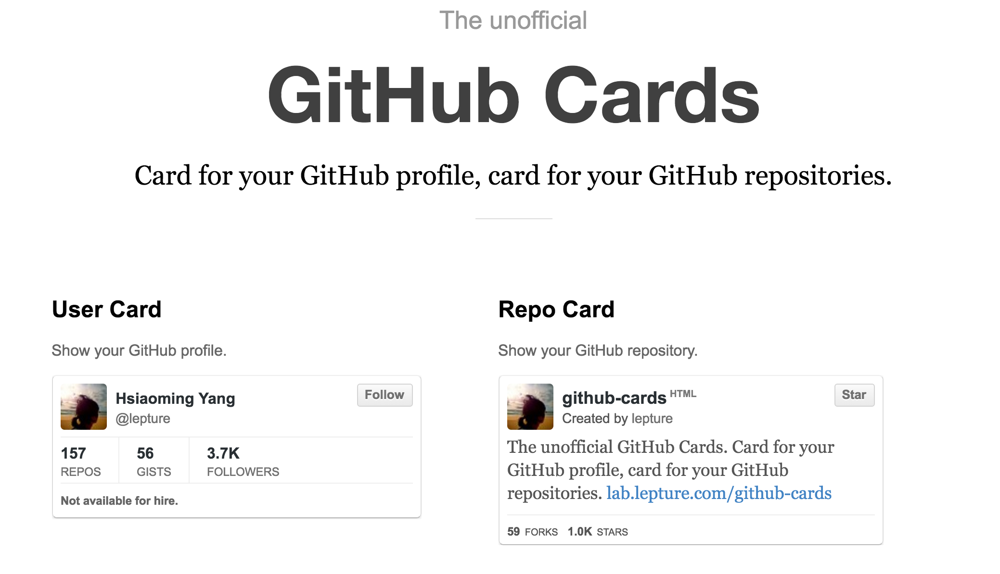
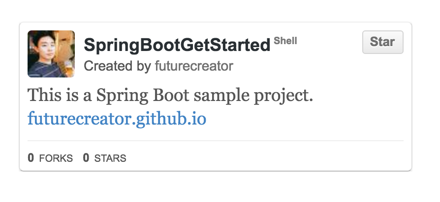
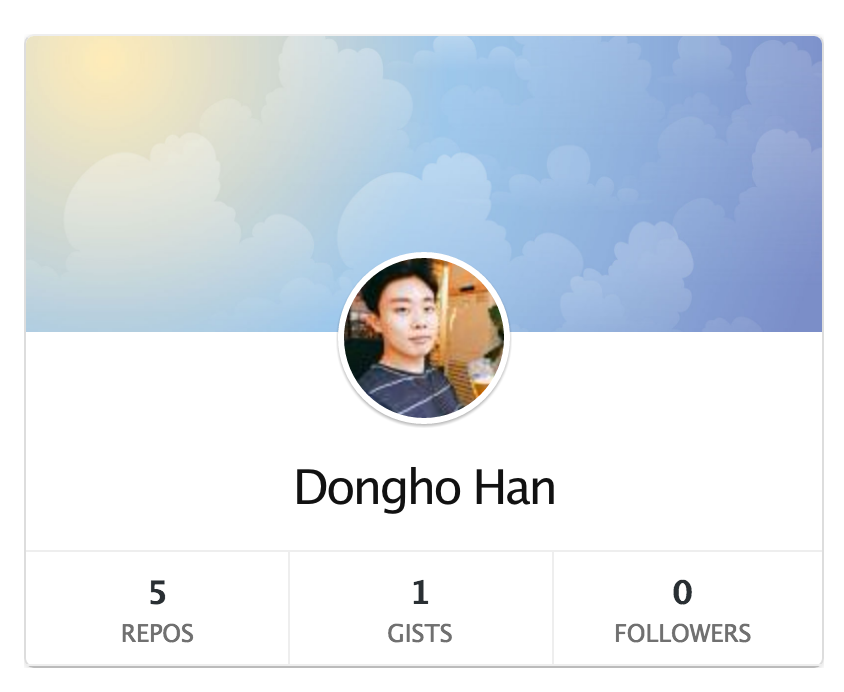

Hexo 네임카드 추가하기 (Github Card)
Github Card

블로그에 저런 네임카드를 넣고 싶었는데 마땅한 걸 못찾아서 그냥 About 페이지에 About.me 페이지를 연결했습니다. 드디어 괜찮은 걸 찾았네요. Github Card 는 Github 의 네임 카드를 만들어주는 모듈입니다.
사이트에 가서 username 을 넣으면 유저 네임카드를 자동으로 생성해줍니다. 혹은 username/repository name 이렇게 넣으시면 해당 repository 의 네임카드를 만들 수도 있습니다.


테마는 2가지가 있습니다. 위에 보신 것이 default 이고 아래는 medium 테마입니다.


1 | <div class="github-card" data-github="futurecreator" data-width="400" data-height="" data-theme="default"></div> |
생성을 하면 코드가 자동으로 생성되는데요, 이 코드를 복사해서 원하시는 곳에 넣으면 됩니다. 속성을 원하시는대로 변경하실 수도 있습니다.
| 속성 | 설명 |
|---|---|
| user | GitHub 유저 네임 |
| repo | GitHub 리파지토리 네임 |
| width | 카드 가로 크기 (기본값 400) |
| height | 카드 세로 크기 (기본값 200) |
| theme | 테마 (default 또는 mideum) |
| target | 링크를 새 탭에서 열게 하려면 값을 공백 (“”)으로 설정 |
Hexo 에 적용하기
이제 Hexo 에 적용해보겠습니다. 저는 사이드바 (Sidebar) 부분 상단에 넣으려고 합니다. Hueman 테마 기준으로 사이드바의 레이아웃은 Sidebar.ejs 에서 정의합니다.
1 | <aside id="sidebar"> |
보시면 사이드바 상단에 토글버튼, 소셜링크 아이콘이 출력되는걸 볼 수 있습니다. 그 다음에 각종 위젯이 나오는데 그 바로 위에 넣겠습니다. 그리고 width 속성값이 기본적으로 400 으로 되어있는데 이 값을 주지 않으면 상위 <div> 에 맞춰서 표시됩니다. 지금 제 블로그의 사이드바를 보시면 적용된 것을 바로 확인하실 수 있습니다.
Hexo 플러그인 활용하기
Hexo 에 Github Card 를 자동생성 해주는 플러그인 이 존재합니다. 태그 플러그인 으로 본문 상에 Github Card 를 쉽게 출력할 수 있습니다. Hexo 태그 플러그인에 대해 궁금하신 분들은 이전 포스트를 참고하시기 바랍니다.
[hexo-tag-plugins]
설치
1 | $ npm install --save hexo-github-card |
사용
태그 플러그인으로 본문 상에 다음과 같은 코드를 작성하면 됩니다. 그러면 해당 위치에 네임카드가 삽입됩니다.
1 | {% githubCard user [repo] [width = 400] [theme] %} |
사용할 수 있는 옵션은 다음과 같습니다.
| 옵션 | 설명 |
|---|---|
| user | GitHub 유저 네임 |
| repo | GitHub 리파지토리 네임 |
| width | 카드 가로 크기 (기본값 400) |
| theme | 테마 (default 또는 mideum) |
Github Card 를 이용해서 Hexo 블로그에 네임카드를 넣어봤습니다. 핸드폰이나 PC 에서도 크기에 따라 잘 나오네요. 다음 포스트에서는 Github card plugin 처럼 유용한 Hexo plugin 을 살펴보겠습니다.
Related Posts
Hexo 네임카드 추가하기 (Github Card)